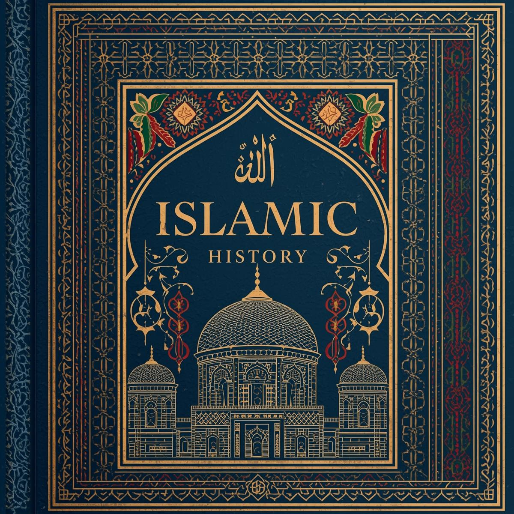
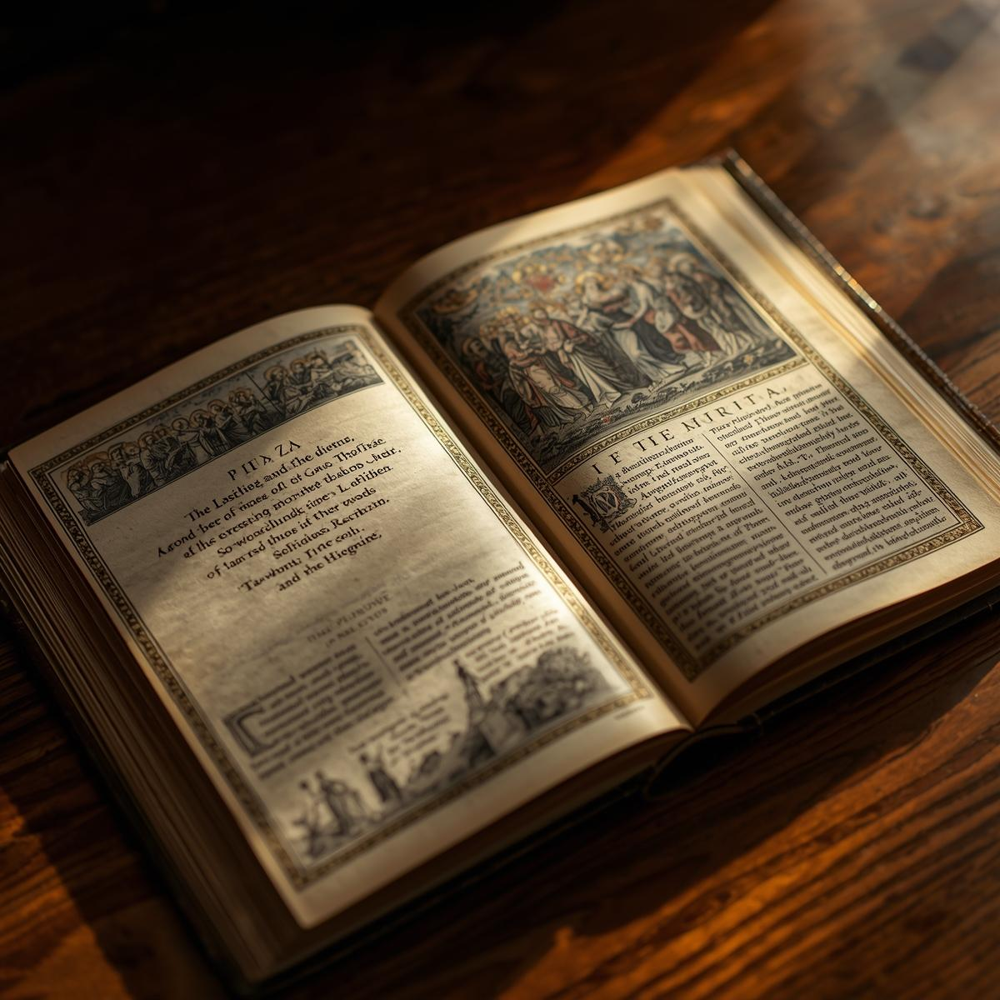
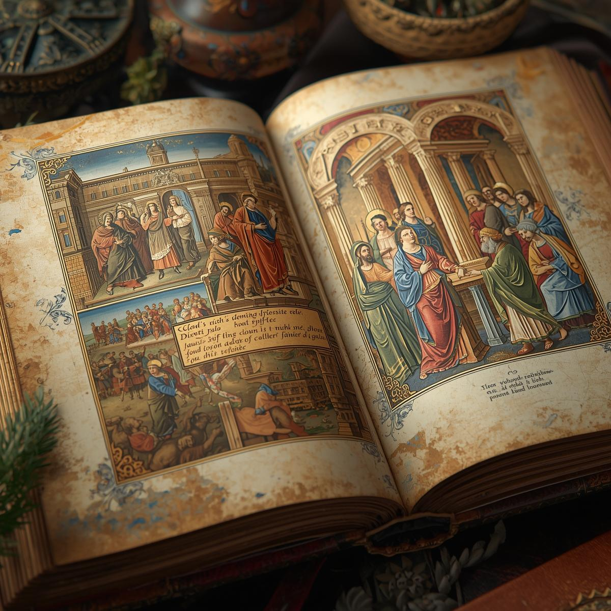
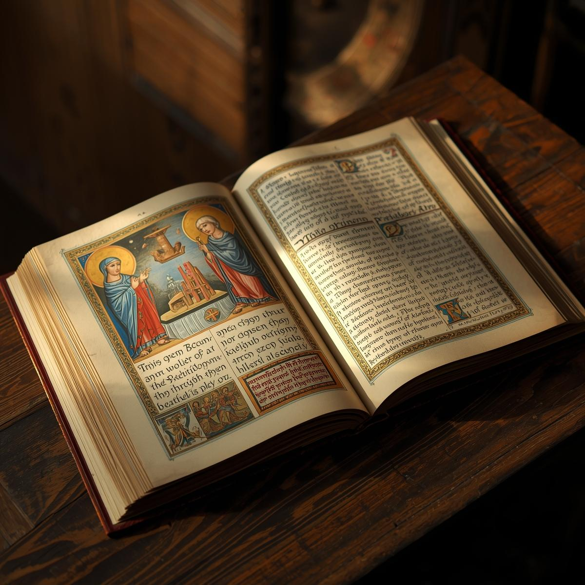
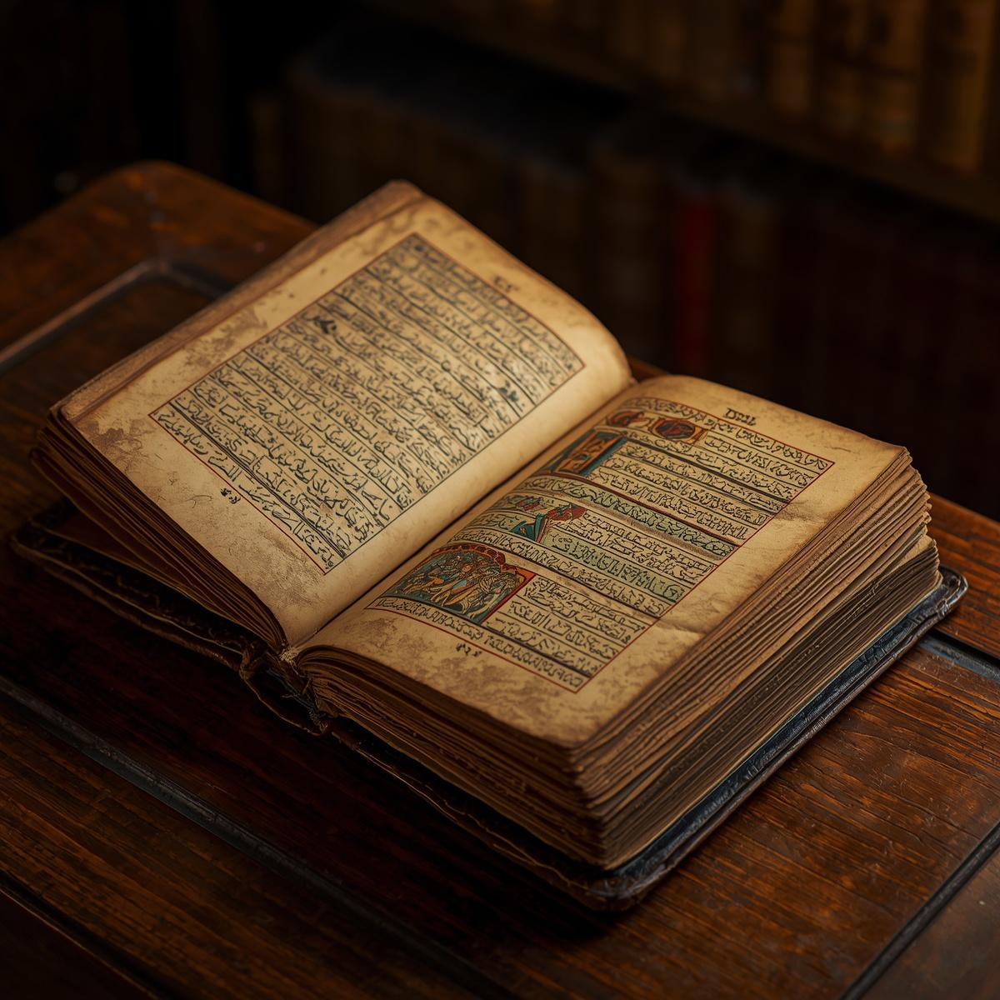
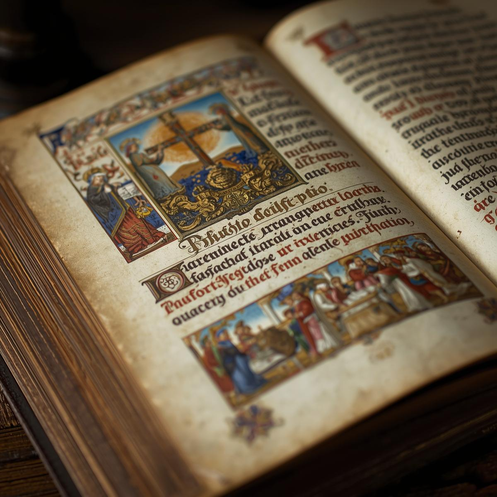

Bedah Buku: Sejarah Islam
Ditulis oleh: el dorgu

Buku ini membahas perjalanan panjang sejarah Islam, mulai dari masa Rasulullah ﷺ, Khulafaur Rasyidin, hingga perkembangan Islam di berbagai belahan dunia.
"Sejarah adalah pelajaran bagi orang-orang yang berpikir."
Penulisan dalam buku ini disusun berdasarkan sumber Al-Qur’an dan As-Sunnah serta referensi sejarah yang terpercaya.
Buku ini cocok dibaca oleh remaja dan orang dewasa yang ingin memahami sejarah Islam secara ringkas namun bermakna.
← Kembali ke Katalog
Bedah Buku: Sejarah Kristen
Ditulis oleh: mante

Buku ini menjelaskan sejarah perkembangan agama Kristen sejak masa awal kemunculannya hingga penyebarannya ke berbagai negara di dunia.
"Perjalanan iman tercatat dalam sejarah panjang umat manusia."
Isi buku disusun secara sistematis dengan bahasa yang mudah dipahami sehingga pembaca dapat mengikuti alur sejarah dengan jelas.
Cocok untuk pelajar dan pembaca umum yang ingin mengetahui sejarah agama Kristen secara singkat dan informatif.
← Kembali ke Katalog
Bedah Buku: Sejarah Buddha
Ditulis oleh: warame

Buku ini membahas kehidupan Siddhartha Gautama serta perkembangan ajaran Buddha dari India hingga ke berbagai wilayah Asia.
"Ketenangan batin lahir dari pemahaman dan kebijaksanaan."
Dengan penjelasan yang runtut dan bahasa yang ringan, buku ini membantu pembaca memahami sejarah serta nilai-nilai utama dalam ajaran Buddha.
Sangat cocok bagi pembaca yang tertarik mempelajari sejarah agama dan peradaban dunia.
← Kembali ke Katalog
Bedah Buku: Sejarah Hindu
Ditulis oleh: mbaemeu

Buku ini membahas asal-usul dan perkembangan agama Hindu sejak peradaban Lembah Indus hingga penyebarannya di India dan Asia Tenggara.
"Tradisi dan keyakinan membentuk peradaban yang bertahan ribuan tahun."
Disusun dengan bahasa yang sederhana dan runtut, buku ini memudahkan pembaca memahami sejarah dan ajaran dasar dalam agama Hindu.
Cocok untuk pelajar dan pembaca umum yang ingin mengenal sejarah agama Hindu secara ringkas dan jelas.
← Kembali ke Katalog
Bedah Buku: Sejarah Konghucu
Ditulis oleh: enaermi

Buku ini menjelaskan sejarah ajaran Konghucu yang berawal dari pemikiran Konfusius di Tiongkok dan pengaruhnya terhadap budaya serta etika masyarakat.
"Keselarasan hidup lahir dari kebajikan dan penghormatan."
Penjelasan dalam buku ini disusun secara sistematis sehingga pembaca dapat memahami nilai moral dan sejarah perkembangannya.
Sangat cocok bagi pembaca yang ingin memahami ajaran etika dan sejarah peradaban Tiongkok.
← Kembali ke Katalog
Bedah Buku: Sejarah Shinto
Ditulis oleh: shintrore

Buku ini membahas asal-usul dan perkembangan kepercayaan Shinto di Jepang serta hubungannya dengan budaya dan tradisi masyarakat Jepang.
"Tradisi leluhur menjadi bagian dari identitas suatu bangsa."
Dengan penyajian yang ringkas dan informatif, buku ini membantu pembaca memahami sejarah dan nilai utama dalam kepercayaan Shinto.
Cocok untuk pembaca yang tertarik mempelajari sejarah agama dan budaya Jepang.
← Kembali ke Katalog
Bedah Buku: Sejarah Sikhisme
Ditulis oleh: maisike
Buku ini menjelaskan sejarah lahirnya agama Sikh di India melalui ajaran Guru Nanak serta perkembangan komunitas Sikh hingga saat ini.
"Persatuan dan keteguhan iman menjadi kekuatan umat."
Ditulis dengan bahasa yang mudah dipahami, buku ini membantu pembaca mengenal sejarah dan prinsip dasar Sikhisme.
Sangat cocok untuk pelajar dan pembaca umum yang ingin menambah wawasan tentang sejarah agama dunia.
← Kembali ke Katalog
Bedah Buku: Sejarah Yudaisme
Ditulis oleh: younde
Buku ini membahas sejarah bangsa Israel kuno, ajaran Taurat, serta perkembangan agama Yahudi hingga masa modern.
"Sejarah panjang membentuk identitas dan keyakinan suatu umat."
Penyajian materi dilakukan secara sistematis dan informatif sehingga pembaca mudah memahami alur sejarahnya.
Cocok bagi pembaca yang ingin mengetahui sejarah Yudaisme secara singkat dan jelas.
← Kembali ke Katalog
Bedah Buku: Sejarah Taoisme
Ditulis oleh: nmare
Buku ini menjelaskan asal-usul Taoisme yang berkembang di Tiongkok melalui ajaran Laozi serta pengaruhnya terhadap filosofi hidup masyarakat.
"Keseimbangan adalah kunci keharmonisan hidup."
Ditulis dengan bahasa yang sederhana dan runtut, buku ini membantu pembaca memahami prinsip dan sejarah Taoisme.
Cocok bagi pembaca yang tertarik pada filsafat dan sejarah kepercayaan Timur.
← Kembali ke Katalog
Bedah Buku: Sejarah Muisme
Ditulis oleh: mboet
Buku ini membahas sejarah kepercayaan tradisional Korea yang dikenal sebagai Muisme, termasuk praktik spiritual dan peranannya dalam budaya Korea.
"Kepercayaan tradisional mencerminkan hubungan manusia dengan alam."
Disusun secara informatif dan mudah dipahami, buku ini memberikan gambaran umum tentang sejarah dan praktik Muisme.
Cocok untuk pembaca yang ingin mengenal kepercayaan tradisional Asia Timur.
← Kembali ke Katalog